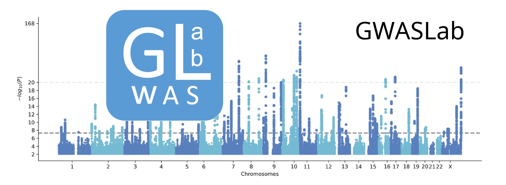

gwaslab (v3.3.0)


Note: Some part of the docs are outdated. I am currently updating the documents.
- A simple python package for handling GWAS sumstats.
- Each process is modularized and can be customized to your needs.
- Most manipulations are designed as methods of python object,
gwaslab.Sumstats.
import gwaslab as gl
# load plink2 output
mysumstats = gl.Sumstats("t2d_bbj.txt.gz",
fmt="plink2",
build="19")
# or you can specify the columns:
mysumstats = gl.Sumstats("t2d_bbj.txt.gz",
snpid="SNP",
chrom="CHR",
pos="POS",
ea="ALT",
nea="REF",
neaf="Frq",
beta="BETA",
se="SE",
p="P",
direction="Dir",
n="N",
build="19")
# manhattan and qq plot
mysumstats.plot_mqq()
...
Functions
Standardization, Normalization & Harmonization
- CHR and POS notation standardization
- Variant POS and allele normalization
- Genome build : Liftover
- Reference allele alignment using a reference genome sequence
- rsID assignment based on CHR, POS, REF and ALT
- CHR POS assignment based on rsID using a reference VCF
- Palindromic SNPs and indels strand inference using a reference VCF
- Check allele frequency discrepancy using a reference VCF
Quality control, Value conversion & Filtering
- Statistics sanity check
- Equivalent statistics conversion
- BETA/SE , OR/OR_95L/OR_95U
- P, Z, CHISQ, MLOG10
- Extract/exclude hapmap3 variants
- Extract/exclude MHC variants
- Filtering values.
Visualization
- Mqq plot : Manhattan plot and QQ plot side by side (with a bunch of customizable features including auto-annotate nearest gene names)
- Heatmap : ldsc-rg genetic correlation matrix
- Scatter Plot : variant effect size comparison with sumstats
- Scatter Plot : allele frequency comparison
- Forest Plot : forest plots for meta-analysis of SNPs
Other Utilities
- Read ldsc h2 or rg outputs directly as DataFrames (auto-parsing).
- Extract lead variants given a sliding window size.
- Extract novel loci given a list of known lead variants.
- Logging : keep a complete record of manipulations from raw data to munged data.
- Sumstats summary function: know your data better.
- Formating GWAS sumstats in certain formats
- LDSC / MAGMA / METAL / MR-MEGA / FUMA / VCF / BED... check available formats
Install
pip install gwaslab==3.3.0
Requirements:
- Python >= 3.6
- pySAM
- pyensembl
- scikit-allel
- Biopython >= 1.79
- liftover >= 1.1.13
- pandas >= 1.2.4
- numpy >= 1.21.2
- matplotlib >=3.5
- seaborn >=0.11.1
- scipy >=1.6.2
- statsmodels > =0.13
- adjustText
Contacts
- Github: https://github.com/Cloufield/gwaslab
- Blog (in Chinese): https://gwaslab.com/
- Email: gwaslab@gmail.com